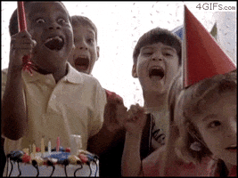

Parte 1
Al fin, hoy es el día; después de esperar un año, es mi cumpleaños. ¿Qué me tendrán preparado mis papás…? ¿Me irán a hacer una fiesta sorpresa… o tal vez me van a dar la computadora que durante tanto tiempo he deseado? ¡Que emoción!, no puedo esperar a ver que me depara el futuro…
De repente, mis pensamientos fueron interrumpidos por unos pasos que se acercaban a mi habitación. Mis papás, junto con mis hermanos entraron sigilosamente y gritaron… ¡feliz cumpleaños Antonio!, se lanzaron a darme un gran abrazo. Yo, muy emocionado, les di las gracias y también los abracé. Me dijeron que me fuera a bañar y que me alistara para ir al colegio, lo cual hice, y que luego bajara a desayunar. ¡El desayuno estaba delicioso! Una torre de panqueques, y un Milkshake de banano, mi favorito; el día había empezado estupendo.
Al llegar al colegio, todos mis compañeros me dijeron feliz cumpleaños. Sin embargo, muchos de ellos andaban algo sospechosos, como si evitaran que me enterara de algo, ¿mi fiesta sorpresa de cumpleaños tal vez? No podía aguantar la curiosidad, así que en el recreo me acerqué sigilosamente a mis amigos, los cuales estaban hablando en voz baja. Lo único que logre escuchar fueron estas palabras: sorpresa… noche… fiesta…, definitivamente hablaban de una fiesta sorpresa… ¡mi fiesta sorpresa! El resto del día, no pude pensar en nada más que en las posibilidades de mi fiesta. ¡Que emoción!
{kind=link}
Parte 2
En la tarde noche, ya en mi casa, mis papás me dijeron que teníamos que salir. Por supuesto, yo ya sabía a que iba todo esto. Me arreglé, me puse guapo y nos fuimos. Al final, llegamos a la casa de mi tía Lucía, una casa muy grande donde normalmente celebrábamos los cumpleaños. Nos bajamos del carro y mis papás notaron mi emoción, pero no dijeron nada. Cuando llegamos a la puerta del gran salón, mis papás la abrieron y dijeron: ¡Feliz cumplea….! No había nadie. Todo el lugar estaba arreglado, pero no había nadie. Al principio, estaba emocionado esperando que de algún lado salieran los invitados con muchos regalos, pero… nadie. Me puse nervioso y triste, en especial al ver que mis papás estaban nerviosos y mi mamá le gritaba a mi papá. ¿Qué estaba pasando…, me abandonaron, o acaso nadie quiso venir? No pude evitarlo y me puse a llorar.
{kind=link}